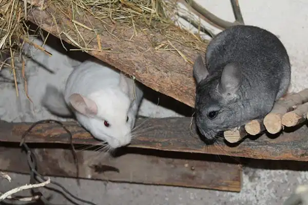
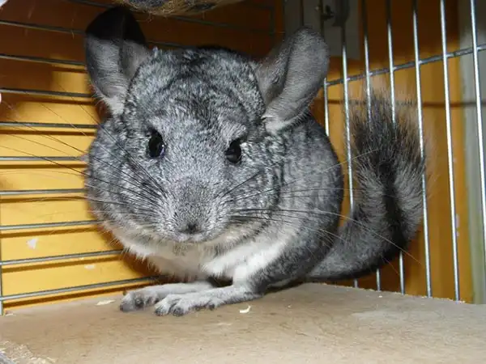

Редкое хобби способно перерасти в бизнес, но начать можно с малого. Например, с разведения домашних животных. Кошки, собаки, аквариумные рыбки — выбор для специализации просто огромный. Расскажем, с чего начать бизнес на разведении шиншилл.
Актуальность бизнес-идеи
Шиншиллы — не только симпатичные домашние питомцы, но еще и ценный мех, и диетическое мясо. А некоторые умельцы даже ищут золото при помощи этих милых зверьков. Если в ваших планах пока не стоит шиншилловодство в промышленных масштабах, то начать можно с продажи животных для домашнего содержания.
Затраты и прибыль
Минимальные вложения в разведение шиншилл начинаются от 78 000 рублей. Первой прибыли в силу специфики разведения придется ждать долго, но с учетом средней стоимости одной шиншиллы и количества в одном приплоде окупить вложения можно за четыре месяца. Даже при минимальных усилиях реально получать 20 000 рублей каждый месяц.
Затраты на старте: примерный расчет для Санкт-Петербурга
- Оборудование 18 000
- Покупка животных 60 000
- Итого 78 000
Ежемесячные затраты
- Корм и наполнители 5 000
- Транспортные расходы 2 000
- Расходы на ветеринара 1 000
- Итого 8 000
Разрешения и документы
Регистрация бизнеса
На старте проекта, когда вы только начинаете разбираться с тонкостями разведения шиншилл, регистрация ИП не нужна. Не понадобится она и в дальнейшем, поскольку проект не подразумевает стабильной прибыли, а оплачивать взносы придется регулярно. Отдавать шиншилл можно за донейшн.
Оформление ИП потребуется на следующем этапе развития проекта, когда вы будете обустраивать питомник или разводить шиншилл ради меха или мяса. Для этого понадобится заполнить заявление по установленному образцу, приложить к нему копию страниц паспорта и подать в налоговую вместе с квитанцией об оплате госпошлины.
Выбор помещения
Разводить шиншилл можно в домашних условиях, но гораздо лучше для этих целей подойдет частный дом. Это должно быть помещение с хорошей вентиляцией, но без сквозняков, с возможность электрического обогрева в зимнее время и кондиционирования в летнее.
Подойдет небольшое подсобное помещение с естественным источником освещения, отапливаемая лоджия или нежилая комната, поскольку шиншиллы ведут ночной образ жизни.
Оборудование
Минимальный набор оборудования для разведения шиншилл:
- Клетка, 2 штуки — 16 000 рублей
- Бункерная кормушка, 2 штуки — 500 000 рублей
- Автоматическая поилка, 2 штуки — 700 000 рублей
- Купалка, 2 штуки — 800 000 рублей
- Итого — 18 000 рублей
Шиншиллы не размножаются в тесных условиях, поэтому клетка должна быть просторной.
Наличие небольшой емкости с крупным песком обязательно, поскольку зверьки обожают чиститься. Вторая клетка понадобится для отсадки новорожденных шиншиллят и их матери. На период беременности самок в клетку помещают деревянный ящик для гнездования.
Как выбрать поставщика
Важный фактор для успеха проекта — покупка первых особей. Шиншиллы стоят дорого, но доход могут приносить долго, поскольку их репродуктивные функции сохраняются в течение 10-15 лет.
Обычно шиншилл различают по цвету: двенадцать типов стандартной окраски и десять комбинативных форм. Самыми популярными считаются стандартный серый или черный окрасы.
Чтобы не ошибиться с выбором пары племенных шиншилл, обратитесь к профессиональным заводчикам, а не частникам. В питомниках живут сотни маточных особей, а, значит, риски близкородственного скрещивания снижаются. Ориентировочные расходы на покупку двух пар шиншилл составят 60 000 рублей.
Повседневный рацион шиншилл практически не отличается от кроличьего: комбикорм, овощи, зелень, витаминное сено, рыбная и мясокостная мука.
Персонал
Справиться с разведением шиншилл в домашних условиях можно полностью самостоятельно. Поиск клиентов и продажа шиншилл также лежит на собственнике.
Как рекламировать бизнес
Зарегистрируйтесь на профессиональных форумах и в сообществах, разместите объявления на бесплатных площадках, заведите инстаграм для своих питомцев — в поиске потенциального клиента все доступные средства хороши. Можно рекламироваться на Авито
Плюсы и минусы бизнес-идеи
Плюсы проекта:
- Совмещение бизнеса с основной работой
- Бизнес в домашних условиях
- Интересный в реализации проект
Минусы проекта:
- Риски не найти покупателя
- Отсутствие стабильного дохода
- Генетические или наследственные риски, болезни и мор животных
Разведение шиншилл из хобби с нерегулярным доходом может перерасти в полноценный проект по шиншиловодству при определенном опыте и старании. Удачи вам!